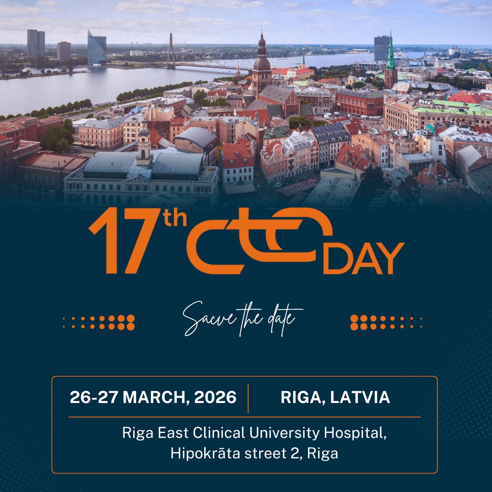
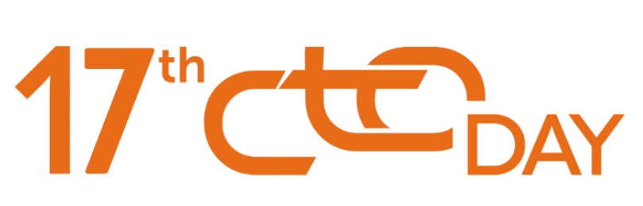
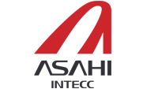
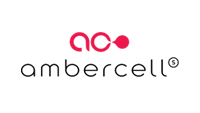
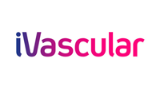
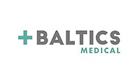
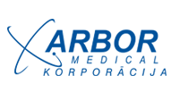

=======
On behalf of the Organising Committee, we are pleased to invite you to join us at the Riga EAST CTO
Meeting, taking place in Riga on March 26-27, 2026.
This meeting is dedicated to interventional cardiologists with a special interest in CTO PCI and complex
coronary interventions. The program traditionally focuses on the technical and practical aspects of CTO PCI.
Over the course of two days, experienced CTO operators will perform 11 complex CTO procedures. Live case
transmissions are planned from six hospitals in Latvia, Lithuania, Estonia, and Bosnia and Herzegovina.
In parallel with the live cases, participants will have the opportunity to engage in interactive
discussions,
attend insightful presentations, visit the industry exhibition, and take part in hands-on sessions.
We look forward to welcoming you to Riga for two highly engaging and interactive days. We encourage you
to explore the program and begin planning your participation.
Warm regards,
Dr. Artis Kalnins
Riga East Clinical University Hospital Hipokrata Street 2, Riga, Latvia
Riga East Clinical University Hospital, Clinic of Cardiovascular Diseases
English
Registration deadline: March 19
- Pullman Riga Old Town
Jekaba Street 24, Riga, 1050
Reservations must be made via email:
inga.gravite@accor.comPlease indicate the following code in the email subject line: Block ID: 1187670
The special rate is valid while the allocated rooms remain available. Please make your reservation as soon as possible.
Transfers will be provided between the hotel and the hospital.
March 26, 2026
07:50 - Pullman Riga Old Town (Jekaba Street 24) → Riga
East Clinical University Hospital (Hipokrata Street 2)
18:00 - Riga East Clinical University Hospital (Hipokrata
Street 2) → Pullman Riga Old Town (Jekaba Street 24)
March 27, 2026
07:50 - Pullman Riga Old Town (Jekaba Street 24) → Riga
East Clinical University Hospital (Hipokrata Street 2)
16:00 - Riga East Clinical University Hospital (Hipokrata
Street 2) → Pullman Riga Old Town (Jekaba Street 24)





Dr. Artis Kalnins, Riga East Clinical University Hospital
Masahisa Yamane (Japan)
Stylianos Pyxaras (Germany)
Shunsuke Matsuno (Japan)
Nenad Bozinovic (Serbia)
Sergii Furkalo (Ukraine)
Jaroslaw Wojcik (Poland)
Merouzhan Saghatelyan (Armenia)
Peep Laanmets (Estonia)
Andrej Pileckij (Lithuania)
Arvydas Baranauskas (Lithuania)
Dace Sondore (Latvia)
Vladimirs Osipovs (Latvia)
Dace Sondore
Vladimirs Osipovs
Aigars Lismanis
Deniss Vasiljevs
Kristine Dombrovska
Arveds Apinis,
Vitalijs Grebjonkins
Irina Holste
Artjoms Lisnevs
Guntis Lukstins
Jurijs Verbovenko
Sandra Liepina
Riga East Clinical University Hospital (Latvia)
Pauls Stradins Clinical University Hospital (Latvia)
JZU Bolnica Sveti Vracevi Bijeljin (Bosnia and Herzegovina)
Vilnius University Hospital Santaros Clinics (Lithuania)
Klaipeda University Hospital (Lithuania)
North Estonia Medical Centre Foundation (Estonia)
Venue: Riga East Clinical University Hospital
Hipokrata street 2, Riga, Latvia
9:00 – 9:15
Opening and Welcome
Vadims Beluns - Chief Executive Officer (CEO) of of Riga East Clinical University Hospital
9:15 - 9:30
Introduction to “17th CTO Day in Riga East Clinical University Hospital”: Dr. Artis Kalnins
9:30 - 11:45
Session 1: Complex CTO Lesions I Moderators and Discussants: A. Kalnins, D. Sondore, S. Furkalo
Live cases:
Presentations:
11:45 - 12:00
Coffee break
12:00 - 14:30
Session 2. Complex CTO Lesions II
Moderators and Discussants: P. Laanmets, D. Sondore, S. Pyxaras
Live cases:
Presentations:
14:30 - 15:00
Lunch - CTO Training Village - Hands-on Sessions
15:00 - 18:00
Session 3. Clinical Dilemmas in Complex CTO PCI
Moderators and Discussants: S. Furkalo, M. Sahgatelyan. J. Wojcik
Live cases:
Presentations:
Riga East Clinical University Hospital
Hipokrata street 2, Riga, Latvia
9:00 – 9:05
Summary of the first day
9:05 - 11:30
Session 4.Complex CTO Lesions III
Moderators and Discussants: A. Baranauskas, A. Pilcekij, D. Sondore
Live cases:
Presentations:
11:30 - 12:00
Lunch & hands on sessions
12:00 - 15:00
Session 5. Complications and Challenging Case Session
Moderators and Discussants: D. Sondore, V. Osipovs, A. Kalnins
Live cases:
Presentations:
Case Presentations from Estonia, Lithuania and Latvia
15:00 - 15:30
Conference Summary and Closing Remarks
Pre-registration at the registration desk on site is mandatory.
Simulation-Based Education - Stent Dislodgement and Perforations
Lectors and Facilitators: Dr. Arvydas Baranauskas and Dr. Vytautas Abraitis, Vilnius University Hospital Santaros Clinics
11:45
Practical Exercises on Coronary Artery Simulator - Bail-out Stent Dislodgement
14:45
Practical Exercises on Coronary Artery Simulator - Bail-out Perforation
Simulator-Based Hands-On Training: Wolverine™ Cutting Balloon - Calcium Cracking
Hands-On Simulation Session: Boston Scientific CTO Wires in Complex Lesions